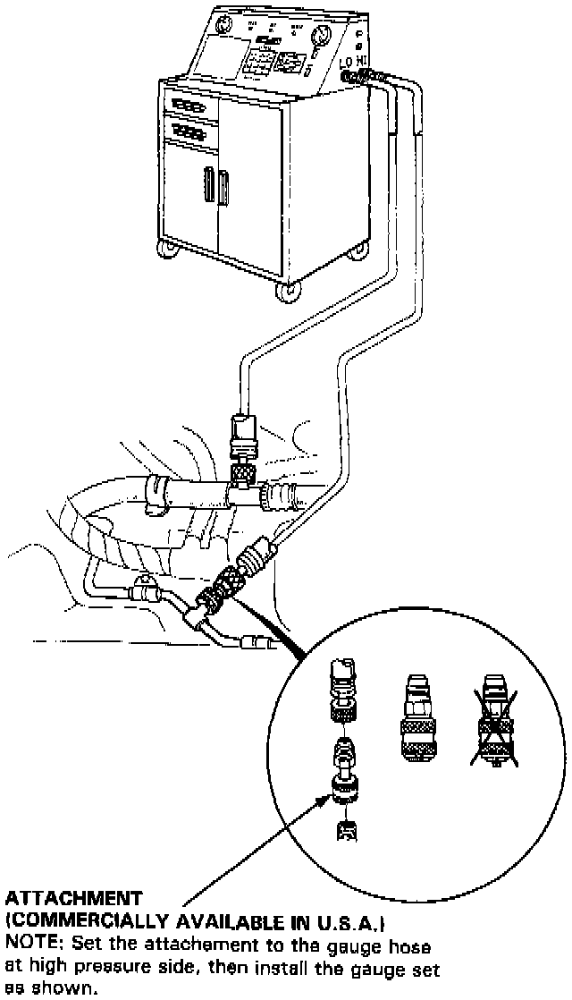

A/C System Leak Testing
Leak TestWARNING: When handling refrigrant (R-12):
- Always wear eye protection.
- Do not let refrigerant get on your skin or in your eyes. If it does:
- Do not rub your eyes or skin.
- Splash large quantities of cool water in your eyes or on your skin.
- Rush to a physician or hospital for immediate treatment. Do not attempt to treat it yourself.
- Keep refrigerant containers (cans of R-i 2) stored below 40°C (100°F).
- Keep away from open flame. Refrigerant, although non-flammable, will produce poisonous gas if burned.
- Work in well-ventilated area. Refrigerant evaporates quickly, and can force all the air Out of a small, enclosed area.

1. Attach an Air Conditioning Service Station as shown.
2. Open high pressure valve to charge the system to about 100 kPa (14 psi), then close the supply valve.
3. Check the system for leaks using a leak detector.
4. If you find leaks that require the system to be opened (to repair or replace hoses, fittings, etc.), recover any charge in the system according to the Refrigerant Recovery Procedure.
5. After checking and repairing leaks, the system must be evacuated.